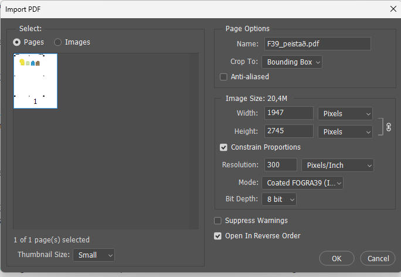
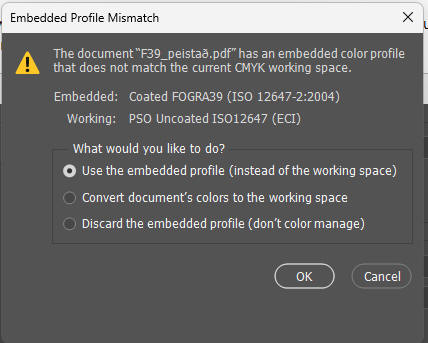
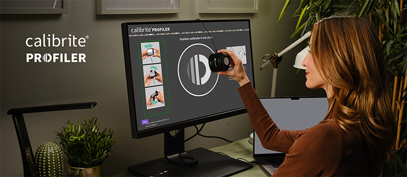
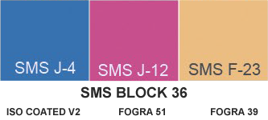

Shop SMS SMS Technical SMS products & services SMS in articles and webinars Testimonies
SMS and the environment SMS news SMS READY Experts Interesting links SMS: How, why and when SMS Q&A
SMS for design and
advertising SMS BLOCKS Cost of ownership |
SMS for print Printers (in all categories) SMS READY - or not? |
Getting started using the Spot Matching System (SMS)
Regardless if you are a brand owner, a designer or a printer/manufacturer, - if you like the idea of using colours that look the same in print, online and on TV, we have prepared this section to get you started.
We are
happy to
answer any questions you may have while you are getting
started, so don't be shy to send us any questions you may have to
support@spotmatchingsystem.com.
We
realize that SMS is new territory which requires a new mindset, when it
comes to defining and working with colours.
SMS colours are obviously especially well suited for logo design and consequently for brand design due to the fact that all SMS colours are by default available for process printing on paper, the Internet (websites, social media, including video) and Television. Roughly 80-90% of all jobs printed worldwide are printed using some type of icc based process printing (not spot colour printing).
This means that by default SMS colours cover between 80% and 100% of all mainstream media outlets where brand colours typically need to be displayed in the 21st Century.
Natural colours - SMS Standard colours
Our 2.607 SMS Standard colours cover all mainstream/normal media, - web, TV and normal process printing (CMYK offset printing or digital printing) on white Coated and Uncoated paper.
In 2025 we released a special version of our Standard colours, that we refer to as Home & Office (o) that are optimized for typical PC laptop displays that only cover approx. 60% of the sRGB gamut, - which is the standard colour space for the Internet. This version is feasible for brands that want to make sure that just about everyone can view their colours correctly on their screens. For instance this may be feasible for manufacturers of consumer goods that are sold online.
Earth Tone colours - SMS ECO colours
Our 2.607 SMS ECO (e) colours however are made for off-white paper - optimized for newspaper printing to ISO 12647-3/WAN-IFRA standards, and thus it is safe to say that if newspaper printing and/or recycled, off-white paper is an important part of your marketing you should consider SMS ECO colours which cover 100% of all typical visual media, newspaper printing as well as printing on any coated or uncoated paper, web and TV.
Newspapers should use the ECO colours in their layout work and offer
their customers to use ECO colours for advertisements.
Companies that are especially
environmentally focused, should for sure consider using our ECO colours.
Vivid colours - SMS MAX colours
Our 2.607 SMS MAX (x) colours cannot be correctly reproduced on
uncoated paper. They are simply made for CMYK printing on white, coated paper
(for instance for packaging), web and TV.
The strength of this version
of SMS is that the full strength colours especially are typically more vibrant than the colours of the
Standard and ECO versions, - which can be useful for packaging
applications. If printing on uncoated paper is not a part of the
marketing mix, MAX colours are perfectly safe to use for any brand.
In 2025 we released a special version of our MAX colours, that we refer to as MAX Home & Office (xo) that are optimized for typical PC laptop displays that only cover approx. 60% of the sRGB gamut, - which is the standard colour space for the Internet. This version is feasible for brands that want to make sure that just about everyone can view their colours correctly on their screens. For instance this may be feasible for manufacturers of consumer goods that are sold online.
Ultra Vivid colours - SMS SuperMAX colours
Our 2.607 SMS SuperMAX (sx) colours cannot be correctly reproduced on
uncoated paper. They are made for CMYK or CMYKOGV / extended gamut printing on white, coated paper
(for instance for packaging), web and TV.
The strength of this version
of SMS is that the full strength colours especially are typically more vibrant than the colours of
even our MAX palette, - which can be useful for packaging
applications.
Extended colour gamut printing is still a specialty that is not
available in all sectors. Digital print shops should in most cases be
able to print extended gamut colours, so we are currently first and
foremost recommending our SuperMAX colours for packaging brands.
New media
In addition, it is important for Brand Owners to be aware of new technology in advertising, marketing and sales, such as Augmented Reality (AR) and Virtual Reality (VR). SMS colours are AR and VR Ready, - which means that if, for instance, you create a digital layer on top of a printed item, it will be extremely hard for you to see where the printed SMS colour ends and the digital SMS colour begins - almost like looking through a clear glass window.
SMS colours are also ready for the Metaverse.
Getting started with SMS colours
To cover all bases, we have prepared a step-by-step guide to help designers getting started designing with SMS colours and at the end of this manual, there are instructions on how to convert the chosen SMS colours to Pantone spot colours, - in case Pantone spot colours are needed for printing.
This guide can be downloaded in PDF format here.
If you would like to practice before you buy your first SMS colour palette, you can use the SMS READY control strip to do the training for starters - see top of this page.
Before you begin, please familiarize yourself with which icc profiles are appropriate for each version of our SMS colours.
Press this link to download the spec sheet / overview of the SMS colour palettes and supported icc profiles.
Keep in mind that if you want to see the precicely correct SMS colours
on your monitor, the monitor must be capable of displaying the entire
sRGB colourspace, - and it has to be calibrated. The same of course goes
for your printer - and any output device or printing press.
Printers and printing presses of all types must be calibrated or adjusted to output
colour to international standards.
This is not a novelty so no need to panic. This is as obvious as needing to mix Pantone colours using the right Pantone base inks in the right amount - and then printing the Pantone colour with the correct amount on the right paper, - otherwise the resulting colour will be incorrect.
Monitor calibrators are available from Spot-Nordic along with other tools for colour management.
For product design, where paints or dyes need to be mixed, the LAB value
of each SMS colour must be matched.
Printers and Manufacturers may also want to order a printed SMS colour
ticket to match their colour visually during production - see further
information in our
service section.
The easiest way to get started using SMS colours consists of the following steps:
1. Order the SMS labelled sRGB colour patches for brand design (P20, P20o, P20e, P20x, P20xo or P20sx).
Each colour palette contains 2.607 colours. The colour palettes are delivered in sRGB, PDF format.
Make sure to order the colour palette you want to use.
The cost per SMS colour palette is 120 Euros for v7 colour palettes but EUR 90 for v6 palettes.
You can either order your SMS colour palette or other services via the
webshop of Spot-Nordic
or you can contact
support@spotmatchingsystem.com and place your order and we will provide you
with an invoice and instructions on how to pay, either with a wire
transfer to our account or with a card (debit or credit).
The SMS colour
palettes can optionally also be delivered in png or tif/tiff format. Please be sure to
request this when you order, otherwise the default format is PDF, as
mentioned.
Please contact support@spotmatchingsystem.com and let us know if you have a problem using our colours and we will do our best to help you solve it.
SMS colours are suited for use in all major professional Graphics applications in the market, including Adobe apps, Affinity and CorelDraw.
For SMS orders we need the following information:
Company name/customer/user name
Field of business (Designer/Brand Owner/Printshop/Manufacturer/Other)
Contact name
Contact email for invoicing
Contact email for orders
Contact mobile phone
Invoicing address
Shipping address
2. Once you have received your SMS file, open your SMS colour palette in Adobe Photoshop.
In our example let's say you ordered the P20 colour palette in sRGB format.
- Select sRGB as your working space.
- Open the PDF file.
- Pick out the SMS colour patches (SMS colourcubes) you want to use and copy them into a separate (new) document.
Like this.

Now save your chosen SMS colours as png or TIFF/TIF, which you can import into your application. Always embed the sRGB profile with the file.
NOTE: If you are designing a website and you don't happen to have an EyeDropper Tool, you can always pick up the HEX values of your chosen SMS colours in Photoshop and simply enter them to create the swatches in your app.
However, in our example, we are going to start by designing everything - website, letterheads, envelopes, business cards and leaflets in sRGB format suited for Internet viewing, since our customer is in another country and we are on a deadline (and would like to save ourselves the cost of printing out proofs and mailing them overseas).
Working with curves (Illustrator, Indesign, Affinity Designer, CorelDraw etc.)
Here is just a simple example that gives you an idea of what your workspace might look like.
Open the application you want to use for your job.
Be sure to select sRGB as your RGB colourspace before you get started.
Create a new document.
Import/place your colours in sRGB format to your workspace. Place them either inside our outside the working area, depending on whether you want your customer to see his actual SMS colours - or not.
Here we have some curves, some text and one bitmap image - in sRGB format. This is a simple suggestion of how, what you send to your customer could look like.
The job - lets say this is an M-65 envelope is simply outlined with a box, - but that's just a suggestion, not a requirement.
The SMS bitmap colourcubes are in this case included with the softproof in their original bitmap format but they are of course outside the working area, since they are not to be printed on the envelope.
Use the EyeDropper tool to either add the SMS colours directly to your graphics or optionally to your colour palette/swatches within your working space - like here below:

This is possible in most mainstream applications for design such as Adobe Photoshop, Adobe Indesign, Adobe Illustrator, Affinity Designer, Affinity Publisher and CorelDraw. It is even easy to use the SMS sRGB colours in Microsoft Powerpoint if you are concerned about the colour of your slideshows.
In this example we used good old Macromedia Freehand - see example here above.
If you have a problem using SMS colours in your application, please contact support@spotmatchingsystem.com and we will do our best to assist you, even if you need a work-around.
Finish your job and safe it and then save a copy as "name_of_your_choice_web_version" as png with the sRGB profile embedded in the case of web graphics, PDF if you are working for print (and don't forget to use high resolution images for print).
In the case of web/sRGB format, email the file or publish it online for your customer's visual approval. Keep in mind that since the colours are in this case sRGB format, your customer should in most cases be able to make up his or her mind by viewing your creation on his or her (sRGB) smartphone or tablet. Again it should be emphasized that for accurate colour matching on screen, the screen must be calibrated regularly, - every 1-2 weeks.
Do it Yourself - instructions on how to create jobs using SMS colours - from A-Z.
If you don't want to start by creating your job in web (sRGB) format to show to your customer but would rather like to go right to designing for print - and then print out your proofs to show to your customer, you can either order your SMS colours for CMYK from Spot-Nordic, - for instance the FOGRA39 version of your SMS colour palette ready for print - or you can convert your SMS colours yourself to your print colour gamut(s) in a few easy steps- see detailed step-by-step instructions on how to create a new SMS job and do you own colour conversions here.
Included in this presentation are instructions on how to locate the closest Pantone colour(s) to your SMS colour(s), - which can be useful if Pantone spot colours are an essential part of your visual brand identity.
NEW: (June 2024): Use your SMS colours in ASE format directly within your colour space for one-offs.
We strongly recommend that you do the step-by-step training to familiarize yourself with the way SMS colours should be converted correctly from one colour space (sRGB) to another, enabling you to do SMS brand design.
We actually recommend that even colour experts with decades of experience working with icc profiles and doing icc colour management do our SMS READY Expert training (see www.spotmatchingsystem.com/experts.
Once you have gotten used to working with SMS colours, there is a shortcut for you to use SMS colours in design, - say if you only need to use them for a one-off print job - or even when you are beginning to work for a new SMS customer:
We tested this method on an Affinity Designer 2 v. 2.6 on a PC.
First of all (like always) create a a new sRGB job.
Set your RGB to sRGB (default for SMS work).
Use the ASE colour palette - currently only included with the Standard v6 and MAX v6 colour palettes to select your colours.
For your own convenience, be sure to write the name of the SMS colours you use for the job.
We recommend that you import the SMS bitmap colour cubes in sRGB format and place them within the workspace - but this is not essential. We use those bitmaps for two purposes: To ensure that the correct SMS colours are being used - and to doublecheck that the colours are correct.
Finish your job and then save the job in Affinity Designer format: Name of customer_job_sRGB for web, - or something like that.
Now, if you need to use some - or all of your design for printing:
Close your sRGB document.
Set your rendering intent to Absolute Colorimetric Rendering Intent, - just like we did in the SMS step-by-step training.
Set your CMYK space to the destination - say Fogra 39 (ISO Coated v2), if you want to print in CMYK on coated paper to Fogra 39 standards.
Create a new CMYK document with the working CMYK space selected.
Open your sRGB document and simply copy the parts of your layout that you want to print and paste them into the CMYK document.
If you imported the bitmap SMS colour cubes that you created using Adobe Photoshop in sRGB to your design app workspace (Affinity Designer in our test), instead of manually replacing them with CMYK format SMS colour cubes in bitmap format - see step-by-step training, copy them along with your graphics into the new CMYK document.
Finish your document and save it as Name of customer_job_Fogra39.
Now export the job as PDF.
Pick a Press-Ready preset. Make sure to Rasterize Everything when you export to CMYK PDF and make sure that the CMYK icc profile is embedded. Most likely - at least if you are working on a Mac, you also have to check a box where it says "Convert color spaces" - if you are using Affinity Design 2, version 2.6 or higher.
Make sure the workspace icc profile is embedded.
It is then a good idea to save a new preset called "SMS for CMYK" or something like that.
If you want to be 100% sure you didn't do anything wrong, open your SMS colour palette in Adobe Photoshop in PDF format and manually compare the LAB values of the colours you used for your job to the LAB values of your colours in your original SMS colour palette you should have in PDF format (sRGB).
When you open your new job in PDF format in Adobe Photoshop, on opening you should first see a promt window that should look something like this:

If you get a prompt window and another Mode is suggested, - another icc profile, then you have to go back and start over - or contact Spot-Nordic for assistance.
Press OK and then you might get a window that looks something like this:

You should use the embedded profile (instead of the working space), - since now you just want to check the LAB values of your colours. Press OK.
Make sure to check that the rendering intent is set to "Absolute Colorimetric Rendering Intent".
Choosing Absolute Colorimetric Rendering Intent will give you the LAB value of the SMS colours, including the paper white - the same LAB values that your printer should get when he measures the final printed job with a 0/45 spectro measurement device.
The LAB values should be the same - or at least extremely close. To check the exact LAB values that should be present, convert your SMS colour palette to the same CMYK format using Absolute Colorimetric Rendering Intent. Just be careful not to save it - unless you save it as for instance P20_FOGRA39format.PDF seperately.
If the LAB values of your PDF are not correct, start over. If there is a slight difference between the LAB values and the CMYK values of the bitmap colour cubes and your graphics, or even the original colours in your SMS colour palette in Adobe Photoshop, - don't worry. Affinity Designer and even Adobe Illustrator may export slightly different colours v.s. Adobe Photoshop - but +/- 1 in either the resulting LAB value or a CMYK halftone is something that we are willing to accept.
If you are however communicating a CMYK value of your SMS colours remotely however, - just look it up in Adobe Photoshop, - but make sure that you are using the same CMYK icc profile as your printer before you give them the CMYK values.
This is quick and easy, but you need to do it correctly.
To be clear, using this faster method will result in slight twitching of LAB and CMYK values, compared to picking the colours from each bitmap prepared for each media.
But for 90% of customers, it will be good enough, - close enough.
Here is a test we did. First we created our job in sRGB format, as you should do when you are working with SMS colours. We made 2 versions. The first one at the top is where we used SMS colours directly from an ASE colour palette we created with those 2 SMS colours. In the middle row we imported the 2 colours in png bitmap format and used the eyedropper to pick the colours from the bitmap and applied them to the hearts.
The we saved the file.
Next we created a new file in CMYK format using the FOGRA39 icc profile.
We then opened the sRGB master and copied both versions from the sRGB master into the new CMYK file.
Then we created a 3rd version at the bottom, where we replaced the sRGB bitmap colours with a FOGRA39 format TIFF we created in Adobe Photoshop. We then used the eyedropper to apply the colours from the FOGRA39 bitmap to the hearts at the bottom. This is the only way to get 100 exactly the correct CMYK and LAB values for both the graphics and the bitmap.

For safe visual on-screen likeness of SMS colours, users of SMS colours and their customers/decision makers should get a good calibrator for their display.

Screen calibrators are available from several vendors for a few hundred Euros - available for most displays from standard digital monitors down to smartphone displays.
Recommended calibrators for professional work are for instance the Calibrite/Xrite or Spyder bundles from Datacolor. Calibration should be done approx. every 7-14 days to keep your display correct.
You can order a screen calibration package from Spot-Nordic from EUR 240 - see www.spot-nordic.com/qc.
Some customers may prefer to order a certified SMS ticket or even a colour proof with their complete brand identity proposal for final approval, which can also be ordered from Spot-Nordic - see www.spotmatchingsystem.com/services - contact support@spotmatchingsystem.com for a quote.
On approval of your job, get your CMYK colours, switch your colour settings to CMYK using the requested CMYK icc profile and the RGB colourspace and settings you are used to using (for instance Adobe RGB).
Now you can simply save a copy of your print documents under another name, import the CMYK colour bitmap to your workspace and use the EyeDropper to replace your web colours with the SMS CMYK colours and name them for instance SMS J-12 F51, if you are going to print according to Fogra 51.
Remember to replace the 72dpi image(s) with at least 300 dpi image(s) and save the job in PDF format for printing with the CMYK icc profile embedded to be on the safe side.
Make sure that SMS CMYK colours in your document should not be converted in any way by your Printer. The CMYK halftones are ready for print as they are. If there are RGB images within your layout, in addition to the SMS colours, those should however be subject to conversion to CMYK by your Printer.
Please view this presentation where we show you exactly step-by-step how to select your SMS colourpalette, how to set up your workspace and how to convert your SMS colours - from your sRGB colours to industry standard CMYK colours, for both coated and uncoated paper.
You may also consider to order our remote training, where we assist you remotely while you are getting the hang of using and converting SMS colours with your apps, if you would like to get your own SMS READY Expert diploma - see www.spotmatchingsystem.com/experts.
Using SMS colours in Website Design (using HEX codes)
If you want to use the SMS colour(s) to write text in web design apps - for instance headlines, you can safely use the HEX value of any SMS colour you are working with in most applications. Just grab it from Photoshop or whatever application you are working in.
For instance if you want to use the actual colour of our sample magenta - I-12 for headlines on our website, the HEX value of that colour is #ca5994

If we use it in a headline, it looks like this:
HEADLINE using #ca5894, - the HEX value of SMS I-12.
It is very important for new SMS users to understand that the SMS ticket (P6) here above is not just a digital copy of the printed ticket for evaluation of the layout. It is in fact a colour correct digital version of the printed ticket in sRGB format. The reason the colour is visually correct is that it is common amongst the sRGB colourspace and the Fogra 51/Fogra 52 colourspaces used in for instance offset printing to ISO standards.
If your monitor is correctly calibrated to sRGB, this is exactly what the printed contract proof should look like, should you decide to invest in one - and consequently should you want to print this ticket in CMYK at your Printers, - these are exactly the colours you should expect.
The simplest way to think about SMS colours is to think of them as absolute colours. They are not supposed to change visually, as long as you (as a Designer) and your Printer follows instructions on how to use them.
Using SMS colours in Graphic Design
Examples
Keep in mind that although we just use 1 - 3 SMS colours in our examples here below, you can of course use as many SMS colours you want for your jobs.
SMS Solids and Gradients - working with bitmaps

In this example we picked the colours SMS J-12 and SMS G-12 for the logo.
If your application enables it, add your SMS colours to your colour palette and name them - SMS A-12 web, SMS G-12 web and SMS J-12 web. Select your colours from this colour palette in your design process. The above examples are done in Photoshop, which does not enable adding and replacing colours in this way, but this is for instance possible if you are working in Adobe Indesign or Illustrator - see https://tech4pub.com/2020/11/14/indesign-tip-find-and-change-colors/ for Indesign and https://www.youtube.com/watch?v=JxyZmvcx5oU for changing colours in Adobe Illustrator.
We could strictly speaking have just picked the colour SMS J-12 and then used 70% layer opacity, to achieve a colour similar to SMS G-12.
Transparency however has been known to cause problems in output for printing, so the safer approach is to simply pick the SMS colours you want to use, if you don't need to use transparency to achieve a certain effect in your creation.
In our example, we also created a smooth gradient with colours ranging from SMS A-12 to SMS J-12, which is why we needed to add the SMS A-12 to the job because when it comes to printing your colours in CMYK, you need to order a CMYK version of each SMS colour that you actually use in your layout, - including the "from" and "to" colours used for gradients, and replace the sRGB colours with CMYK colours.
This is necessary in order to keep your complete range of SMS colours exactly correct when we transpose them from one media to another - for instance from web to print or television.
If you are feeling adventurous and want to do something completely unique using gradients, you can do that with SMS colours.
The same rule applies here: If you want to be able to reproduce your SMS gradient correctly in all media, you need to keep track of your SMS colours and your gradient settings.

Here we have used 3 standard SMS colours to create a unique headline.
In this case, the colours between the
chosen SMS colours are of course completely new colours - not named SMS
colours. These new colours you yourself have created are as safe as the
SMS colours on each side.
Just be sure not to use any colours but SMS colours to define your
gradient, and you will be able to keep your creation colour
consistent/fixed visually in any media.
If you pick a random black colour instead of the SMS black (J-42), there
will be a visual difference between different media, so please be
careful.
If you would like to use an SMS gradient for a brand logo, that is not a problem.
SMS Transparency / fixed SMS colour overlays for photographs

In the above example we decided to use transparency so we picked the full colour SMS J-12 and applied it with 70% opacity on top of a b/w image we wanted to use.
In this case the SMS J-12 is in fact the only SMS colour we need to do the job, while SMS G-12 is of course the resulting colour laid on top of the image.
A more typical example where a designer or a photographer might want to consider adding an SMS Colour overlay - possibly even to the entire visual brand identity of a customer, would be if it was decided that all his official material should look "old", always and everytime.
Traditionally in order to make images seem old, so called duotone technique has been used, where you typically print the image with black (K) and a brownish spot ink.
But with SMS colours you can achieve a similar effect, and it will cost you nothing extra at the Printers, - like this:


Here we simply picked our very own standard SMS J-44 and applied it at 30% on top of the image and at 10% on the background.
It is possible to apply effects such as grain in addition at your discretion but in that case you have to keep track of the effect settings, if you intend to use it regularly.
You may ask yourself now, why you need SMS to do this, something that
you have done many times all by yourself.
The answer is that if
you use our SMS colours, you can keep your photographs
colour consistent
across print, online and Television, - including the final colour of the
effects for side-by-side visual comparison between printing on coated
paper, printing on uncoated paper, web and TV.
This does not mean that a photograph may not be allowed to "pop" - for instance in printing on gloss coated paper. You may take advantage of the full colour gamut of gloss coated paper for a photograph, while maintaining colour consistency in the overlay colour and effects you may choose to apply to your image in all media for a uniform visual experience!
If requested, we can even take full colour images and adjust them in such a way that they will never change visually, whether they are printed on coated paper or uncoated paper, displayed online or on TV. This may be useful for some photographs intended to be used as a part of a brand identity - or perhaps simply because the photographer would like his image to look the same, wherever people see it - in any media.
For instance, the image here below has been processed to remain consistent in accordance with our original SMS Standard colour palette - on white coated or uncoated paper, online and on TV. The 3 SMS colour patches in the lower left corner show that this image is appropriate to be used along with colours from the original SMS colour palette, - and we can easily check if the colours of the image are correct or if they have changed.

To be 100% sure that we will be able to keep your image and your artwork uniform visually within our colourspaces, once you are finished with it, you should send a master version in full resolution (bitmap) and sRGB format to support@spotmatchingsystem.com so we can run a few tests on it to be sure that no part of your design is outside our colour gamuts. If an effect for instance drops outside our gamuts, we will adjust the effect slightly to move it inside our gamuts and send you back a new master.
Switching from your old brand colours to SMS
If you already have an established logo and you are not going into a re-branding process, you can still switch to SMS in many cases, for increased consistency in colour cross-media, without anyone probably noticing that you made a switch, except perhaps your Printshops, that now have to print to international standards.
If you are simply annoyed by constant colour fluctuations every time you see your logo, there is simple way to do this:
If you are happy with the current web version of your logo but unhappy with how it performs and compares in print for instance, you can simply open your own sRGB format web logo and see if any of the standard SMS colours are visually similar to your current colours. You can use your Eye Dropper tool to compare your current web colours and our SMS web colourcubes. Remember to use the sRGB colourspace here, as before.
Try replacing your old colours with new SMS colours (using the same method of first placing the SMS colourcubes within the master document of course) and if you are happy with the outcome for online viewing, replace the old colours in all versions used for online viewing.
If you find suitable SMS colours to replace your current web colours,
you might want to consider ordering an A4 SMS colour ticket sheet of the new
colours, - if you want to be 100% sure that you want to make the switch
to SMS - see below.
You may even want to order a printed proof of your new logo.
As close as our sRGB colours are to the printed versions of our colours,
the printed SMS colours on paper are the master proof, since displays can
be slightly different, especially if they have been adjusted by the user
- or if they have "drifted", which happens to all displays with time.
As mentioned here above, to view SMS sRGB colours as correctly as
possible, your monitor should be able to display the entire sRGB gamut -
and it should be calibrated at least every 2 weeks.
A really good idea, once you receive the SMS colour tickets, is to adjust your display (monitor, laptop, smartphone etc.) so that it simulates the colours on the SMS colour ticket.
The correct lighting condition to view our SMS colour tickets is normal daylight - D50.
If you are a perfectionist, you may prefer to send us the current logo in sRGB format, along with a list of the colours that you have been using until now as your reference brand colours (preferably create colourcubes for us within the document - we like our cubes).
We will send you brand new custom SMS colourcubes which are as close as we can get to your old colours, while still keeping them within our SMS colour gamut - the SMS gamut of your choice - the Standard, ECO or MAX gamut.
3. Getting ready to print your SMS colours, in offset, digital, flexo or gravure
a) You would only like to replace your SMS sRGB web colours with SMS CMYK colours:
If you are a non-subscriber, please contact your Printer/Manufacturer to
find out which Print Standard is required for your job.
If you order 3 SMS CMYK colour variations or
more, we can contact your Printer/Manufacturer on your behalf to
find this out - and consequently which CMYK icc profile you should use
when you prepare the job for printing.
This service is also included if you are an SMS subscriber and so are
all 6 SMS colour palettes (value €720).
Simply send us the email address and name of who ever is in charge of
these things at your Printers, along with the request for the CMYK
colours and information on what substrate / what type of paper you want to use for your job.
The price pr. SMS CMYK colour variation is €30 pr. colour, so if we stick to our example here above, the price for those 3 SMS colours for the first standard you need is €90. The good news is that if you should need to use those SMS colours for another type of paper = another print standard later, the price for all 3 colours will only be €60, because we will turn your 3 colours into one SMS BLOCK, - which looks something like this:

Here to make sure no mistakes are made, the user can see that the icc profile to be used when working with these colours is the ISO COATED v2 profile. The papertype to be used is Fogra 51 and the Print Standard of the Printer should be FOGRA39.
In general it is highly suggested to use the same papertype as the print standard (Fogra 51 paper and the Printer outputs and prints the job to Fogra 51 etc.) - but this sometimes happens and we can adapt our SMS colours to these circumstances by tweaking the colours a little bit if necessary.
Read more about our smart and economical SMS BLOCKS here.
As soon as we know both the substrate type and Print Standard of your Printer, we will send you the SMS CMYK variations of your requested SMS colours.
Lets say that you chose bright, white, coated paper to print your job which is consistent with the white point of Fogra 51, - and your Printer has requested that you use the PSO Coated v3 icc profile to set up your job:
We will then send you your SMS CMYK colours with the PSO Coated v3 icc profile embedded.
Create your own SMS colours
If you are willing to take responsibility for converting your sRGB or
REC colours to CMYK, you can safe yourself the cost of
buying CMYK variations or any other variations for that matter from Spot-Nordic.
The colours you get in this case will almost always be made up of 4 colours - CMYK,
while SMS CMYK colours ordered from Spot-Nordic are often made up from
fewer process colours. You can get consistent colours cross media by converting your sRGB or Rec.
709/2020 colours yourself to CMYK.
Once you have received or prepared your SMS CMYK Colours
Set up your workspace to CMYK, using the PSO Coated v3 CMYK icc profile and the RGB space you are used to using for CMYK - often Adobe RGB - see more details on suggested setup for CMYK printing of SMS colours here.
If you finished the web version (sRGB) of the job, the easiest way to go
about this is to use the job you already finished in sRGB format. Simply
save the web version and then save another version as "name_for Printing
to Fogra 51_coated, paper" - or something like that. change your Colour
Settings, convert the entire file to CMYK - PSO Coated v3 and then save
it again.
Once you have done this, open the new SMS CMYK colours file and copy it
into your workspace and then REPLACE your
SMS sRGB colours with the new colours, using the EyeDropper
tool.
Once you have replaced the colours in your colour palette, rename the
colours - instead of "web", write for instance F51 (SMS A-12 F51, SMS
G-12 F51 and SMS J-12 F51 - in our example).
If you had photographs or other bitmaps in your file, - in sRGB format, don't forget to replace those with at least 300 dpi photographs/bitmaps. The resolution for web design is typically 72 dpi, while 300 dpi is the minimum resolution for print.
Once you have replaced your SMS web colours with the SMS CMYK colours and your low resolution sRGB bitmaps/photographs with high resolution ones, save your job as a PDF for your Printer and embed the icc profile (PSO Coated v3 in our example).
If you are an American Designer and you are not familiar with Fogra but used to working with GRACol CMYK icc profiles such as CRPC3, - don't worry. SMS supports those as well.
b) You would like to convert your entire web layout to the Print condition of your Printer.
Once your layout / creation has been approved and you want to start preparing a print job, especially if you used transparency, gradients or other visual effects, you have the option of sending the final version of your creation to Spot-Nordic in full resolution (300 dpi at least - including photographs) and it's final size(s), and it will be assigned a unique ID. Please remember to include the SMS colourcubes used within the layout.
Send it to us in PDF format with the sRGB icc profile embedded.
We will from then on provide you the correct version of your creation as
a whole (instead of just the SMS colours), adapted to the substrate and
the print standard of your Printer to ensure complete colour consistency
of your creation cross media.
It is for instance an economic idea for Designers to set up their entire
Visual Brand Identity in sRGB, including all variations of the SMS
colours that are to be used for the Brand Owner, and then simply order
the complete layout in the requested CMYK format.
From then on it is easy for the Designer to open the Brand Manual in the
correct format to pick out the SMS colours or artwork he or she needs to use for
each job.
The price pr. such a page (or a logo) is EUR 140 (SKU P10 - see
www.spotmatchingsystem.com/services.
Optionally you can use the same method described to convert individual SMS colours to convert your own layout to the CMYK print condition you want.
For more demanding customers we recommend that you order so called SMS colour tickets.
SMS colour tickets are simple tickets, approx. A7 in size (so 8 tickets pr. A4 sheet for instance) that you physically send to your Printer. The SMS colour tickets, like our printed posters and colour guides, are certified according to ISO 12647-7-2016, - which basically means that the colours are exactly correct, - perfect for your Printer to match on press.
You can order either coated or uncoated tickets - in the case where you are using either standard or ECO SMS colours. Both will display the same colours but it is a good idea to send a coated ticket to your Printer, if you are planning to print on coated paper and an uncoated ticket, if you are planning to print on uncoated paper, not to cause confusion.
Keep in mind that the SMS MAX colours are only made for printing on coated substrates and thus only coated proofs are available - according to Fogra 51 by default.
The cost of an A4 size containing 8 SMS tickets with your brand colours (up to 5 SMS colours pr. ticket) is EUR 113 or roughly EUR 14 pr. ticket if you are not an SMS subscriber, EUR 70 if you are an SMS subscriber (EUR 8.75 pr. ticket).
Postage to your location is added to the price.
4. Enabling Quality Control of your layout with focus on your SMS colours (optional)
The SMS CMYK colourcubes you receive if you order them from Spot-Nordic are approx. 15 x 15 mm each (measureable area approx. 10 x 15 mm), so if you are not stretched for space - i.e. if the final size of the production substrate is large enough, you might even want to consider setting up an extra colourbar, consisting only of your own SMS CMYK colours and place it outside the cropmarks, preferably just above the spot where the SMS colours are being used. Try to make sure that the custom SMS colourbar is in the same direction as the actual colourbar, which the Printshop usually adds before outputting the job, - like here below.
The reason why this is relevant is that the ink amount in printing, during production is adjusted based on this colourbar and the ink flows across the colourbar (from below and up as an example, if you look at the picture here below) and if you want to check afterwards, whether your SMS colours were correct exactly where your SMS graphics were positioned within the layout, this may be the only way to check this. If we had put the SMS colourbar next to the image here below and turned it 90°, the ink amount where the SMS colourbar was positioned might have been perfect, while the ink amount might have been off where the logo is positioned.
This is by no means necessary or conditional, but this is a cool way to ensure that the press operator is aware of the SMS colours within the layout and can measure or visually match the SMS colours to an SMS colour ticket, if one has been provided.
If your Printer was not provided with an SMS colour ticket, you can at least check if your colours are correct or not afterwards, - i.e. if your Printer in fact printed according to the ISO 12647 standard you agreed on during your preparation for the job.
Just make sure to get one uncut sheet where you colours and your custom colourbar are displayed.

You can of course use these same SMS CMYK colours everytime you print the same job or a job with the same paper and with the same settings at no cost.
Just be aware that if you change anything - the papertype or Printshop, you may need to order a new variation of your SMS colours and your SMS logos - or do another conversion by yourself.
Feel free to contact support@spotmatchingsystem.com at any time while you are getting started using SMS colours in your design.
Technical assistance and communications with your Printer(s) is included, should you choose to subscribe to SMS including advice if you would like to, for instance, change from one substrate to another.
We can assist your Printer to become SMS READY. That means that we have checked their ability to print CMYK colour to our standards. In short we expect all better Printshops to be able to print our SMS colours according to ISO 12647 standards - either Fogra or G7 standards, whether they are Offset, Gravure, Flexo or Digital Printers. So should you, since ISO 12647 is the Universal Standard for multicolour printing enabling you to predict with some certainty what your job will look like, including your photographs and all your graphics.
If you are a Graphic Designer or represent an Agency, a good idea, when you subscribe your first SMS customer is to send us a list of your Printers and technical contacts, so we can check their actual ability to print to standards.
If you are seeking consistency in printing of your Brand Colours, your print shop has to be able to print consistently to your standards. To become officially SMS READY, print shops need to be able to commit to printing of SMS colours within a dE00 of 3 or less.
A quick and simple way to check if CMYK printed colours are correct - whether there are SMS colours within the layout or not, is to use our free SMS READY control strip, that the designer can always place within the workspace but outside the cropmarks (requires some extra paper).
If there is limited space, it is ok to skip the large blue/gray patch - see image below and even scale down the colour patches a bit (check with your printer first to make sure that each patch is large enough for them to measure it on press).

You can download the SMS READY control strip for free here.
5. Quality Control 2 (optional) - keeping all your SMS colours in one place and checking physically if they are correct

Spot-Nordic is happy to offer SMS users a small but advanced spectral measurement device, which connects via Bluetooth to your mobile phone (iPhone or Android). It is perfect for Brand Owners, Designers, Printshops and Manufacturers that are tasked with consistent reproduction of colours.
It enables users to measure their colours and store them digitally in one place, - in their pocket and from then on to share them and do quality checks to compare new products to the same colour targets, defined by their CIELAB values.
In the case of SMS colours, you can always check the LAB value of your colour in your sRGB colour palette to check that the CIELAB (LAB) value of your printed colour is close enough to be OK. At any time you can contact Spot-Nordic if you feel that your SMS colour is not close enough to what it should be. We are happy to assist.
No longer do you have to check your products against old printed samples or printed colour guides that are most likely faded, unless they are less than 1 year old and thus no longer a reliable standard to compare against.
Your measured and stored digital colours - the measured CIELAB values however ARE your new standard and you can communicate those CIELAB values to your Printer or Manufacturer so those colours can be checked especially in production.
This is how you actually keep track of the colours you are responsible for.
The instrument is called ColorMeter Exact and the cost is only €599 exl. VAT, including shipment worldwide.
Included in the price of the Exact is a copy of the SMS P20 Standard colour palette v6 in PDF and ASE format worth €90 (approx. US$98).
In addition the SMS P20 Standard v6 and the P20x MAX v6 colour libraries are included in the mobile app, so you can simply select the library and measure any colour to see what is the closest SMS colour - and how close it is to your sample.
Contact support@spotmatchingsystem.com to order your ColorMeter Exact + a copy of the Spot Matching System.
Further information and a testimony from the inventor of the Spot Matching System at www.spot-nordic.com/qc
Shop SMS SMS Technical SMS products & services
SMS and the environment SMS news Interesting links SMS: How, why and when